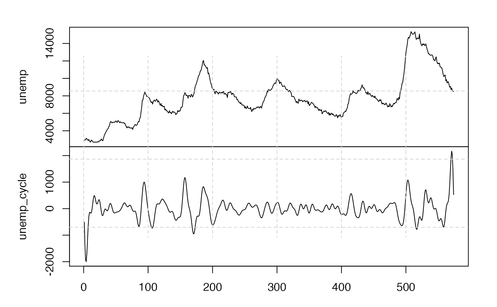

This function computes the cyclical component of the trigonometric regression filter.
filter_tr(x, ...)
| x |
Univariate vector, numeric or ts object with only one dimension. |
|---|---|
| ... | Further arguments passed to |
#> [1] 2.1359454440 -0.3743631394 -0.4173901196 0.0464666921 -0.9006889615 #> [6] 0.1827916870 0.6489515047 -0.3280063625 0.3582211711 0.2293269657 #> [11] -0.2933416141 -0.5546115615 0.0751649434 0.3667966236 0.1045425442 #> [16] -0.1909789553 0.0235461175 0.5091211101 -0.4802902945 -0.6261858622 #> [21] 0.4538316075 0.5167200486 -0.0774998258 -0.4835091497 0.1632105264 #> [26] -0.0496859937 0.3271189887 -0.2148246396 -0.0824193582 -0.4584596893 #> [31] 0.6382390140 0.6308270218 -0.6009527672 -0.7830660549 0.3813707980 #> [36] 0.1612259809 0.3967145242 0.2013744146 -0.4660009347 -0.3133974391 #> [41] -0.0466256406 -0.0522931929 0.8549328877 -0.4434341891 0.0979088841 #> [46] 0.5460592853 -1.0563804474 -0.7843908301 1.2665403478 0.2498781098 #> [51] 0.5287731323 -0.8759568235 -0.3303945786 -0.4615649829 1.0739579064 #> [56] -0.2369780288 0.0510287393 -0.0497573640 0.1792964578 -0.0649482741 #> [61] -0.5571209948 0.3231877651 -0.5248089254 1.0833153839 -0.1516413828 #> [66] -0.2871932505 -0.1172465518 0.1129806602 -0.3847145863 -0.2398937748 #> [71] 1.0361741635 0.0116341056 -0.4197040324 -0.0008271027 -0.6527393337 #> [76] 0.3031521466 0.5669187795 0.4608768114 -0.8608397838 -0.3093244014 #> [81] 0.0705260846 0.6093810367 -0.1550913484 0.5074091544 -0.5014818585 #> [86] -0.6329999482 0.0749221468 -0.1056576760 1.2558290634 0.7042208631 #> [91] -1.5263746873 -0.7291816364 0.2745366480 0.1439619499 0.9286802159 #> [96] 0.1798793563 0.4209766918 -1.4601577196 -0.7626176372 0.0095672013# }